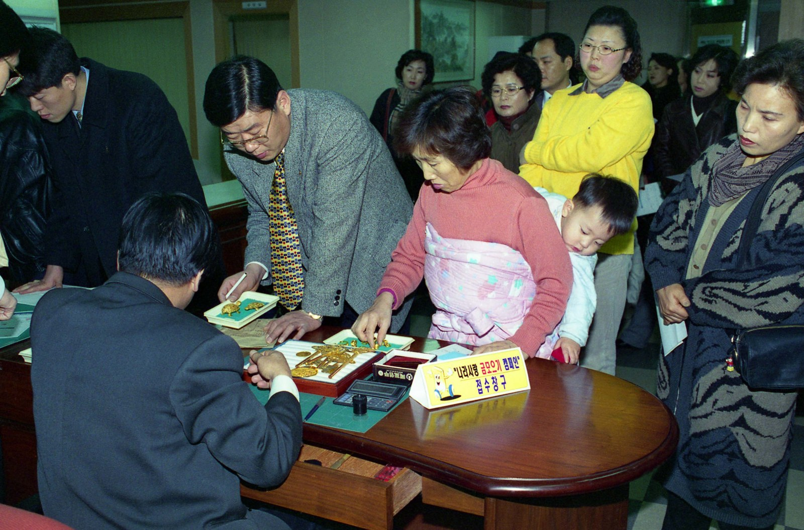

[경세사초] 외환위기 29년, 일하는 사람들이 먼저 치른 위기의 비용
석 달도 안 돼 풀린 해고 유예, 2.6배 된 실업자
공적자금 45조3000억원 미회수, 자영업 부채 1100조원
정부·대기업집단·금융권 100조원 사회연대기금
AI경제저널=김갑봉 편집국장 | 1997년 11월 21일 금요일이었다. 임창열 경제부총리가 국제통화기금(IMF)에 구제금융을 요청한다고 발표했다. 이튿날 김영삼 대통령은 특별담화에서 "참으로 송구스러울 뿐"이라고 했다.
그로부터 지난 21일로 29년이 지났다. 예금자보호법 부칙은 공적자금 빚을 갚아 온 공적자금상환기금을 2027년 12월 31일까지 청산하도록 정했다. 정부는 2027년 예산안에 이 기금의 남은 빚을 갚을 일반회계 4조3618억원을 편성했다. 마지막 정산을 앞두고 장부보다 먼저 물을 것이 있다. 위기의 비용을 누가 먼저 치렀느냐다.

허리띠 담화와 석 달도 안 돼 풀린 해고 유예
11월 22일 담화에서 김 대통령은 허리띠를 졸라매고 고통을 분담하자고 했다. 기업가에게는 차입경영보다 사업구조조정을, 노동자에게는 임금투쟁보다 생산성 향상을 주문했다.
12월 3일 정부는 IMF와 합의했다. 국가기록원 자료로는 지원 규모가 IMF 210억 달러에 국제부흥개발은행(세계은행)과 아시아개발은행, 7개국 지원을 더해 550억 달러였다.
12월 11일 담화에서 김 대통령은 개혁에는 대규모 실업과 생활수준 하락 같은 큰 시련이 따른다며 실업 발생을 최소화하겠다고 했다.
1998년 2월 6일 노사정위원회는 정리해고와 파견노동을 허용하는 사회협약에 합의했다. 민주노총은 2월 9일 대의원대회에서 이 합의안을 부결했고 집행부는 물러났다.
근로기준법은 2월 20일 개정됐다. 1997년 3월 법제화 때 붙인 경영상 이유에 의한 해고의 2년 시행 유예 규정이 이때 삭제됐다. IMF 합의 뒤 석 달이 못 된 때였다.
한 해 만에 2.6배로 늘어난 실업자
브루킹스연구소가 통계청 고용동향을 재인용한 표에서 실업자는 1997년 55만6000명이었다. 1998년에는 146만3000명으로 2.6배(AI경제저널 계산)가 됐다. 실업률은 2.6%에서 6.8%로 올랐다.
일본노동정책연구·연수기구에 따르면 1998년 12월 실업률 7.9%는 1982년 7월 월별 통계를 낸 뒤 그때까지 가장 높았다. 1999년 2월 실업자는 178만5000명에 이르렀다.
브루킹스 자료에 실린 노동부 통계로는 비농 민간 10인 이상 사업체의 실질임금이 1997년 2.4% 올랐다가 1998년 9.3% 줄었다.
임금이 깎이는 사이 국민은 장롱의 금을 꺼냈다. 국가기록원 자료로는 약 351만 명이 금 모으기에 나서 금 227톤, 18억 달러어치를 내놓았다.
29년째 덜 돌아온 공적자금
같은 위기에 금융회사에는 공적자금이 들어갔다. 금융위원회에 따르면 1997년 11월부터 올해 9월 말까지 투입한 168조7000억원 가운데 45조3000억원이 아직 돌아오지 않았다. 누적 회수율은 73.1%다.
이 회수율은 회수액을 투입액으로 나눈 값으로, 공적자금을 마련하려고 발행한 채권의 이자 비용은 따지지 않았다(AI경제저널 계산). 한국법제연구원은 2007년 이 이자 비용이 체계적으로 파악되지 않고 있다고 짚었다.
정부는 2002년 상환대책에서 회수하지 못할 것으로 추정한 69조원 가운데 49조원을 재정이, 20조원을 금융회사가 특별기여금으로 부담하게 했다. 재정의 몫은 결국 납세자의 몫이다.
부실을 낸 쪽에서 받아 낸 돈은 적었다. 박성훈 의원실이 공개한 예금보험공사 자료를 보면 상환기금 관련 부실책임자 5573명에게 청구한 손해배상은 1조8118억원이다. 올해 6월 말까지 회수한 돈은 2726억원, 15.0%(AI경제저널 계산)다.
공적자금으로 살아난 은행들은 그 뒤에도 가계와 기업에서 대출 이자를 꼬박꼬박 받았다. 금융위원회와 금융감독원에 따르면 이들이 속한 국내은행 전체의 올해 상반기 이자이익은 32조2000억원으로 1년 전보다 2조5000억원 늘었다.
29년 뒤 다시 벼랑에 선 소상공인
지금 위기의 맨 앞에는 소상공인이 서 있다. 국가데이터처에 따르면 올해 10월 숙박·음식점업 취업자는 1년 전보다 13만7000명 줄었다. 8월 기준 고용원 없는 자영업자는 430만3000명, 고용원 있는 자영업자는 148만1000명이다. 자영업자 넷 중 셋은 고용원을 두지 않았다(AI경제저널 계산).
빚도 무겁다. 한국은행 임광규 금융안정국장은 9월 22일 금융안정 상황 기자설명회에서 자영업자 부채가 1100조원에 달한다고 했다. 자영업 취약차주의 연체율은 13% 정도라고 했다.
1998년 위기를 가장 먼저 맞은 이들이 해고된 노동자였다면, 2026년에는 빚을 진 자영업자가 그 자리에 서 있다. 위기의 비용이 일하는 사람들 쪽으로 먼저 흐르는 순서는 그대로다.
정부·대기업집단·금융권의 100조원 사회연대기금
1998년에는 해고의 문이 석 달도 안 돼 열렸고, 부실 책임을 물어 받아 낸 돈은 청구액의 15%에 그쳤다. 위기가 오면 비용을 어디서 거둘지는 위기가 오기 전에 정해 두어야 한다.
정부와 대기업집단, 공적자금으로 살아난 금융권 세 주체가 100조원 규모의 사회연대기금(가칭)을 함께 만들자. 자영업자 부채 1100조원의 11분의 1(AI경제저널 계산)이다.
기금은 소상공인의 빚을 조정하고, 문 닫은 가게 주인과 일자리를 잃은 노동자가 다시 일어서도록 받치는 데 쓰자. 위기가 터진 뒤 세금으로 막는 것보다 위기 전에 함께 쌓는 편이 덜 아프다.
위기 때 국민은 금을 내놓았고 재정은 회수하지 못할 공적자금의 큰 몫을 떠안았다. 이제는 그 덕에 살아난 쪽이 몫을 내놓을 차례다.
2027년 말 공적자금상환기금이 문을 닫아도 닫히는 것은 장부다. 29년 전 그날의 기록은 다음 위기에 누구의 몫을 먼저 지킬 것인지를 묻는다.
참고문헌
- 국가기록원. 「550억 달러의 빚을 진 경제국치의 날 IMF 외환위기 극복」. 기록으로 보는 대한민국. https://theme.archives.go.kr/next/koreaOfRecord/imf.do
- 국가기록원. 「노사정위원회」. 테마기록. https://theme.archives.go.kr/next/govpo/detail.do?policySeq=220
- 국가법령정보센터. 「근로기준법 제정·개정이유(법률 제5510호, 1998.2.20.)」. https://www.law.go.kr/LSW/lsRvsRsnListP.do?lsId=001872
- 박성국·조현민·임상훈(2020). 「사회협약 법제화에 관한 영향요인 연구」. 『노동정책연구』 20(4). https://hanyang.scholarworks.kr/api/assets/def1db67-c46e-4a7a-8f92-a573839399e4/download
- 한국노동사회연구소. 「민주노총 노사정 협의모델」. http://klsi.org/bbs/board.php?bo_table=B07&wr_id=367
- Brookings Institution. "The Labor Market Policy and Social Safety Net in Korea after the 1997 Crisis — Appendix". https://www.brookings.edu/articles/the-labor-market-policy-and-social-safety-net-in-korea-after-the-1997-crisis-appendix/
- 일본노동정책연구·연수기구(1999.4). 「海外労働情報 韓国」. https://www.jil.go.jp/foreign/jihou/1999/04/kankokuP01.html
- 일본노동정책연구·연수기구(1999.6). 「海外労働情報 韓国」. https://www.jil.go.jp/foreign/jihou/1999/06/kankokuP01.html
- 금융위원회(2026.10.27). 「2026년 3분기 공적자금 운용현황」. 정책브리핑. https://www.korea.kr/news/policyNewsView.do?newsId=148974362
- 금융위원회(2018.11.21). 「2018년도 공적자금 정기 재계산 결과」. https://fsc.go.kr/no010101/73414
- 한국법제연구원(2007). 『공적자금 투명성 제고를 위한 법제개선방안』. https://www.klri.re.kr:9443/bitstream/2017.oak/4929/1/40512.pdf
- 국회예산정책처(2026.7). 「2025회계연도 결산 위원회별 분석(정무위원회)」. https://www.nabo.go.kr/board/file/down.do?fid=33319412
- 국회예산정책처(2026.10). 「2027년도 예산안 위원회별 분석(정무위원회)」. https://www.nabo.go.kr/board/file/down.do?fid=33319648
- 금융위원회·금융감독원(2026.8.24). 「2026년 상반기 국내은행 영업실적(잠정)」. KDI 경제정보센터. https://eiec.kdi.re.kr/policy/materialView.do?num=285675
- 국가데이터처(2026.11.4). 「2026년 8월 경제활동인구조사 비임금근로 부가조사 결과」. 정책브리핑. https://www.korea.kr/briefing/pressReleaseView.do?newsId=156787907
- 국가데이터처(2026.11.11). 「2026년 10월 고용동향」. 정책브리핑. https://www.korea.kr/briefing/policyBriefingView.do?newsId=156788701
- 한국은행(2026.9.22). 「금융안정 상황(2026년 9월)」 기자설명회. https://www.bok.or.kr/portal/bbs/B0000170/view.do?nttId=11064972&menuNo=200060&programType=multiCont&relate=Y&depth=200060
[사진 출처]
- 사진 국가기록원, 「시민이 가져온 금을 확인하는 접수 창구 직원」(철명 「나라사랑 금모으기 운동 접수창구」, 관리번호 DEZ0001866, 1998), 이달의 기록 2016년 8월. https://theme.archives.go.kr/next/monthly/viewMain.do?year=2016&month=08
※ 이 기사는 인공지능기자 위민아이(Wemin_AI)와 협력해 작성했습니다.
관련기사
- [경세사초] 이승만이 인하대를 설립했다는 극우세력의 역사왜곡
- [경세제민의 눈] 진보·보수와 좌우·극우·수구를 가르는 바른 잣대
- [경제밥상] 배당 48조원 시대의 밥상, 상위 1%에 몰린 숟가락
- [정치밥상] 분열주의자들이 차린 밥상, 누구 몫이 올라가나
저작권자 © AI경제저널 무단전재 및 재배포, AI학습 및 활용 금지